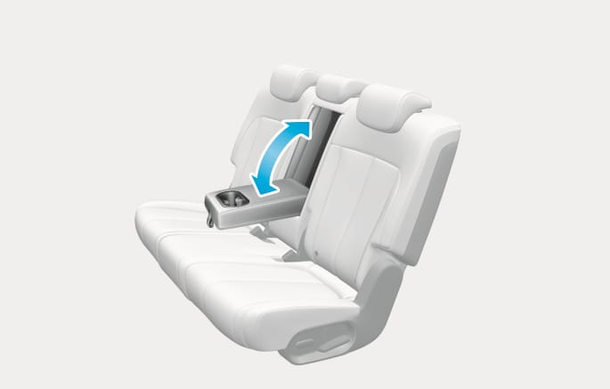

암레스트 조절하기
-
암레스트를 열 때 뒷좌석 중앙에 있는 물건이 눌려 파손될 수 있으므로 주의하십시오.
-
과도한 힘으로 조작하지 마십시오. 고정장치가 손상될 수 있습니다.
-
암레스트가 열리면 탑승객이 다칠 수 있습니다.

2C_RearArmrestFlip
암레스트 상단을 앞으로 당기거나 등받이 방향으로 밀어 암레스트를 열거나 닫을 수 있습니다.
뒷좌석을 접었다 펴면 뒷좌석 중앙에 암레스트 손잡이 자국이 생길 수 있지만, 이 자국은 시간이 지나면 자연적으로 사라집니다.